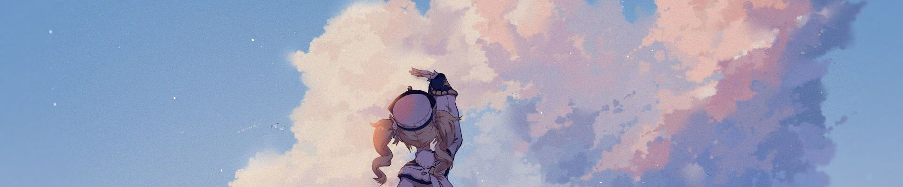
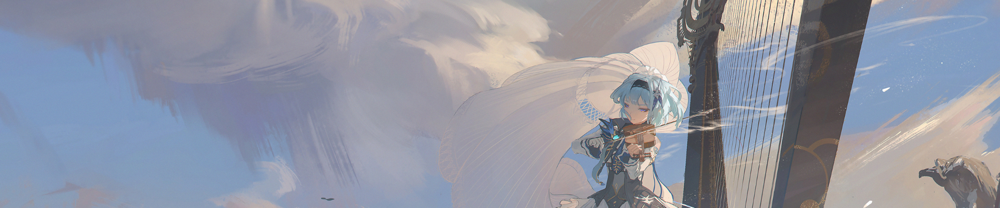

Olá! Meu nome é Henrique Cardoso Lima, sou um main Hutao, estudo na ETEC MCM (Maria Cristina Medeiros), atualmente sou do primeiro ano do ensino médio cursando TI. Bem, como já diz o site, foi feito apenas para mostrar o meu nível de habilidade em um jogo chamado Genshin Impact, também criado apenas para eu testar o meu nível de habilidade com sites utilizando Bootstrap. Bem, como você pode ver, jogar Genshin Impact é um dos meus hobbies favoritos, ocupa bastante a minha cabeça e me ajuda a ficar calmo boa parte do tempo. Bem, agora que você me conhece um pouco, vamos ver um pouco mais sobre o site!
Bem, no Genshin temos personagens com visões e armamentos diferentes que podemos utilizar para combater os inimigos. É utilizado uma equipe/solo de até 1 até 4 personagens, onde cada um tem uma habilidade diferente que influência um ao outro. Abaixo irei mostrar os meus 3 personagens principais e também os que eu mais utilizo para quase tudo.
Hutao é o meu personagem principal no Genshin, meu main DPS e um dos personagens mais fortes do jogo. Ela utiliza a visão Pyro como poder e lança como arma.

Xingqiu é o meu melhor suporte de dano, ele buffa os ataques da Hutao em 1.5x, deixando ela com quase o dobro de dano. Ele utiliza a visão Hydro como poder e espada como arma.

Noelle é a minha melhor suporte de escudo, dando defesa a todos os personagens da equipe. Utiliza a visão Geo como poder e espadão como arma.

Bem, as skills do game se tratam de avaliar o seu conhecimento sobre o mapa em geral, sua skill de luta, seu nivel de conhecimento sobre artefatos/builds e outros.
Bem, no Genshin Impact a habilidade de combate e suas técnicas são muito bem valorizadas, até porque boa parte do jogo se trata disso. Mas como podemos avaliar isso? No geral devemos considerar as técnicas de combate com algum personagem em específico, para "resetar" seu ataque, ou para fazer algo diferente do comum dele por exemplo.
Abaixo você poderá ver o meu nível de skill, baseado em conhecimento de habilidades e de personagens, juntamente com truques de ataque.
Em Teyvat a exploração pode ser ou grande, ou até mesmo infinita, nunca se sabe... mas também pode demorar muito e requer muita experiência com o mapa em si para podermos decifrar tudo pelo mapa, incluindo os enigmas aleatórios por ele. Eu particularmente adoro explorar o mapa nas horas vagas, principalmente quando eu acabo de terminar as minhas missões.
Abaixo você verá meu nível de skills de exploração, baseado também em conhecimento de mundo.
Bem, em Genshin Impact temos muitos tipos de sets de artefatos, combinações diferentes, tudo isso para aumentar os status de seus personagens. Bem, no jogo temos muitas builds divertidas e muitas builds fortes, eu adoro criar os dois tipos de builds para todos os personagens, apenas para ver o dano que eu vou conseguir com eles ou algo do tipo.
Abaixo você verá meu nível de skills de artefatos e meu conhecimento sobre eles.
Em Teyvat temos vários locais onde podemos explorar, passar o tempo ou até mesmo apreciar a vista. Atualmente Teyvat está divida em 4 regiões Mondstadt, Dragonspine, Liyue e Inazuma, onde podemos nos aventurar e entender mais sobre o game. Bem, eu fiz um "cálculo" aproximado do quanto eu explorei desses locais do jogo, confira:
Mondstadt, o primeiro lugar do game e também o que eu mais cheguei a explorar. É raro encontrar alguém que tenha conseguido se aventurar por 100% desse local enorme, mas é possível encontrar muitas pessoas com uma boa % de exploração. Bem, meu nível de exploração não é tão grande, mas também não é tão pequeno. Tenho algumas localizações de Mondstadt com 100% de exploração e fico feliz por isso, é uma conquista um tanto quanto divertida! Abaixo você pode ver o meu nível aproximado de exploração *total*.
Dragonspine, ou também conhecido como o lugar mais odiado do jogo, é um dos lugares que eu não costumo explorar tanto, por conta de ser muito ruim, porém eu tenho um nível de exploração "descente" de certa forma para um lugar que não costumo explorar tanto.
Bem, Liyue é o segundo local do game, sendo um local bem divertido e com uma temática muito incrível. Bem, eu explorei boa parte dela, porém não tanto quando Mondstadt (que foi quase tudo) mas foi um tanto considerável. Eu me esforcei bastante para olhar cada "partezinha" de Liyue, para encontrar mais baús e conquistas, porém esse lugar tem muitas montanhas e "labirintos de pedra". Mas, tudo bem, abaixo contém os meus resultados nele.
Inazuma foi o último local lançado no game, sendo o mais bonito (pelo menos para mim) e o maior, tendo muitas ilhas e muitos mobs diferentes do que você irá se acostumar em Mondstadt e Liyue. Bem, pelo motivo desse local ser tão grande, não cheguei a explorar tanto, porém explorei uma parte consideravelmente grande. Veja abaixo!
Bem, as informações sobre a minha conta do Genshin não costumam ser tão extensas, porém temos alguns adicionais meus, que não se tratam apenas de Genshin Impact, mas também sobre o meu GitHub e tudo mais.
Aqui é a minha página do Github, não contém muitas coisas, porém mostra até onde foi o meu aprendizado.
Link aqui.Essa aqui é minha página sobre Genshin, onde eu usei de base para um trabalho (todos os créditos estão no footer).
Link aqui.Bem, essa aqui é a minha main no game, ela é a minha personagem favorita e a única que eu uso como DPS, dê uma olhada!
Link aqui.